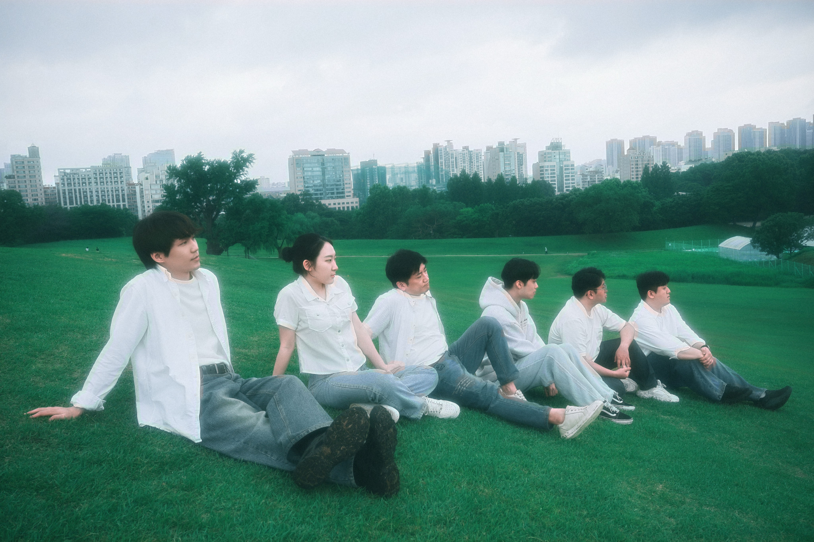
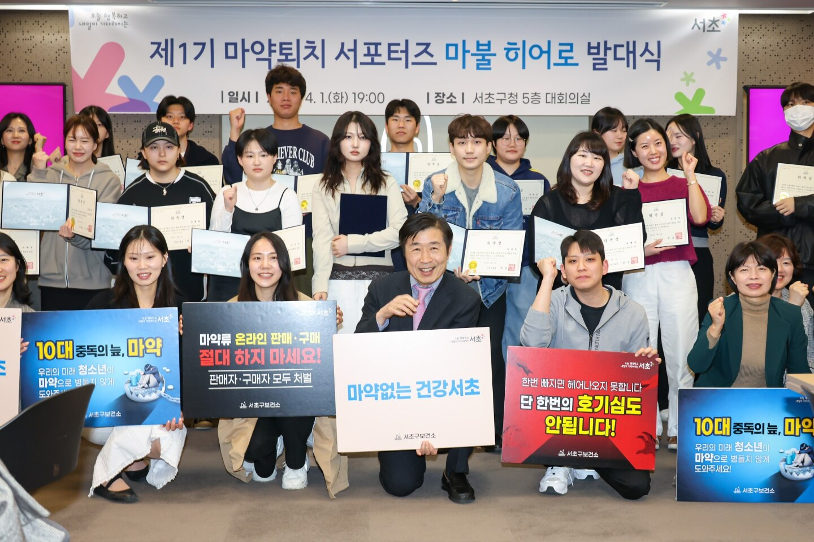

Creative practice · You Know Band
Music
Lead vocalist and electric guitarist in You Know Band (유노밴드). I write and perform original music; our first single, T같은 여자, F같은 남자, was released in May 2026.
View detail →Music, service, and creative work that shape how I think about youth, motivation, community, and human connection.
Lead vocalist and electric guitarist in You Know Band (유노밴드). I write and perform original music; our first single, T같은 여자, F같은 남자, was released in May 2026.
View detail →Cultural-arts outreach for justice-involved adolescents at the Seoul Juvenile Classification Review Center, contributing band ensemble and original-song performance, storytelling, and an interview segment on resilience and renewed goals.
View detail →As a member of Seocho District’s inaugural youth drug-prevention supporters group, I helped bring prevention closer to young people through six public-facing articles, digital content, and community outreach.
View detail →Volunteer teacher and mentor for elementary- and middle-school-aged youth, with an emphasis on supportive relationships, emotional development, and positive participation.
View detail →Lead vocalist and electric guitarist in You Know Band (유노밴드). I write and perform original music and use collaborative music-making as a space for creativity, communication, and connection.
T-like Woman, F-like Man
Our first single follows two people who speak about love in different ways and gradually learn to understand each other. I wrote the lyrics, co-composed the song, and played guitar.
Also on Apple Music, YouTube Music, Melon, and more platforms.

Participated in cultural-arts outreach for justice-involved adolescents at the Seoul Juvenile Classification Review Center, contributing band ensemble performance, original-song performance, storytelling, and an interview segment centered on resilience and renewed goals.

The June program brought a band performance together with electronic violin, visual art, and other performances for adolescents at the center. The reporting describes an evening organized around participation, empathy, and the possibility of a new beginning.
Coverage: The AsiaN · LawIssue · Kyeongin Ilbo
The second visit continued the program’s theme of renewed goals. Alongside the band’s music, the November program included a video interview about dreams and stories of change, according to The AsiaN’s November report.

Drug prevention can sound distant when it arrives only as a warning. As a member of Seocho District’s inaugural Mabul Hero Supporters, I helped bring the message closer—through youth-facing articles, digital content, and community outreach.
Launched by Seocho District as South Korea’s first local-government youth drug-prevention supporters group, Mabul Hero invited young adults to help shape how prevention reaches their peers.
My role was not to make the message louder, but to make it easier to enter: translating public-health concerns into language and formats that young people might actually pause to read.
Prevention works best before risk feels distant, abstract, or like someone else’s problem.
Across six articles, I contributed to a wider prevention conversation about addiction risk, the misuse of prescription medicines—including diet and ADHD medications—and the ways illegal drug distribution can move through online spaces.
The editorial challenge was simple but important: keep the information responsible without making it unreadable. Each piece became an exercise in public communication—clear enough to share, grounded enough to trust, and close enough to everyday life to matter.
The wider initiative carried the same message into the community, including a youth drug-prevention campaign held around World Drug Day at the Seocho Music & Art Festival. Working alongside local public-health, education, police, and pharmacy partners showed me that prevention is strongest when information and community presence reinforce one another.
Program coverage: Yonhap News · Seoul Ilbo · OBS News

Volunteer teacher and mentor for elementary- and middle-school-aged youth, with an emphasis on supportive relationships, emotional development, and positive participation.